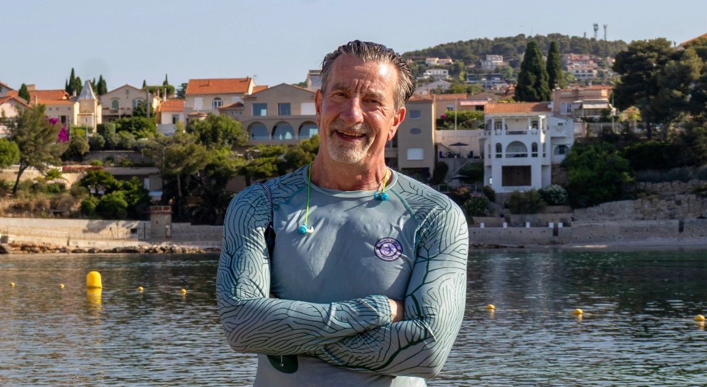
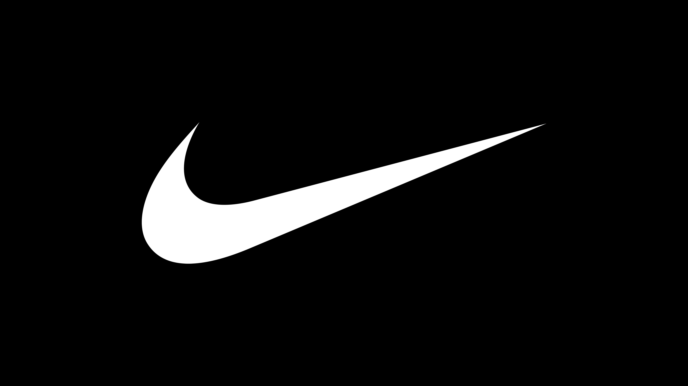
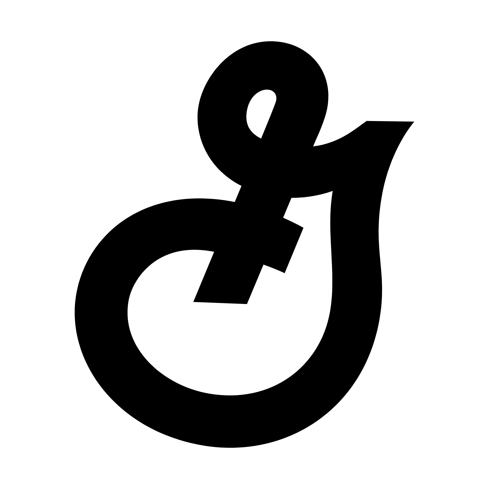
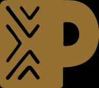
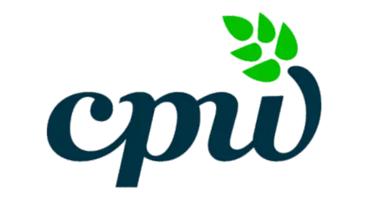
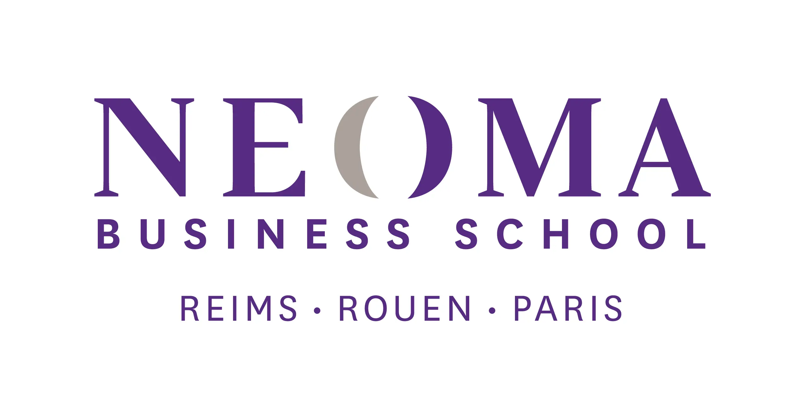
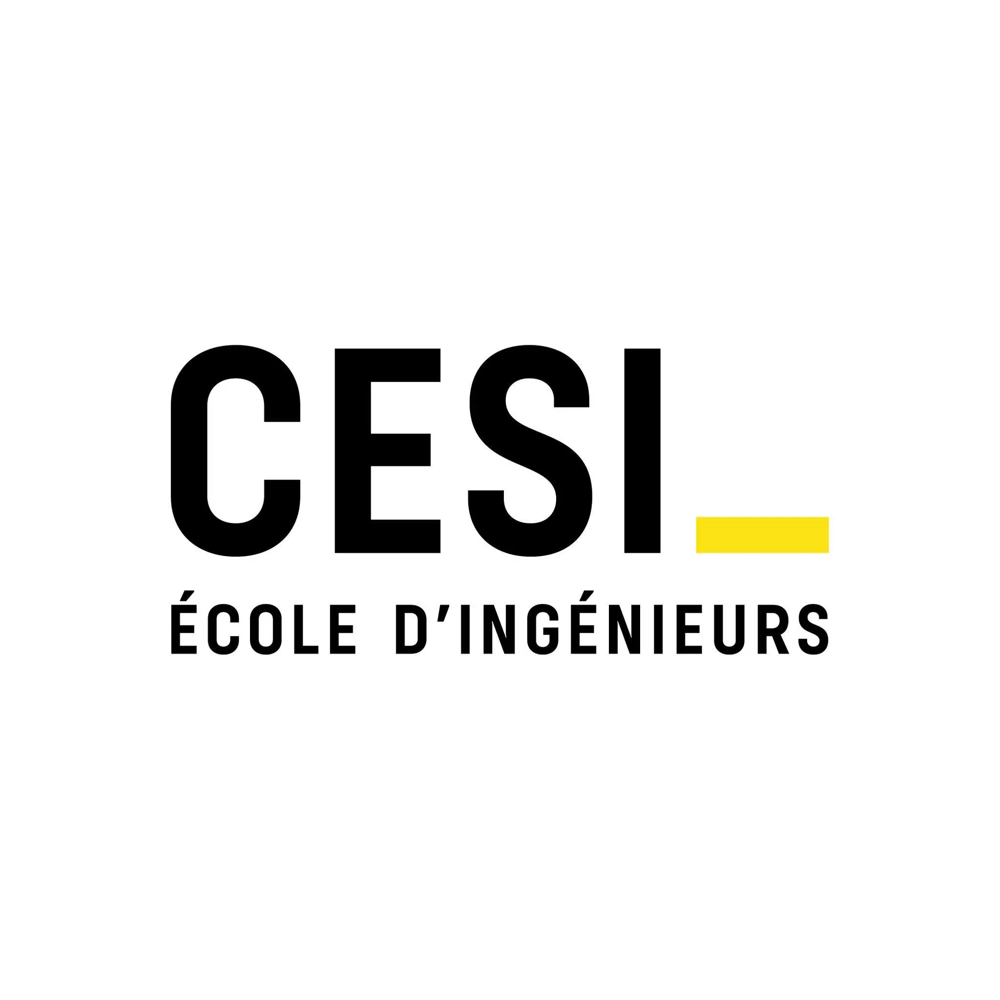
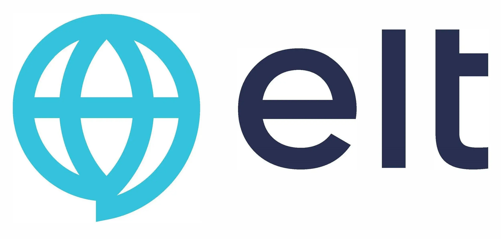

Leaders & managers
Make important decisions, strengthen your leadership and navigate change without compromising your values.
Penn-Jousset Coaching Group
The most lasting transformations do not begin with action. They begin with rebuilding.
I support leaders, teams, professionals and individuals in rebuilding strong foundations so they can move forward with greater clarity, confidence and impact.
Our belief
We live in a world that constantly pushes us to move faster: perform better, take on more responsibility, do more, produce more.
Yet when we are going through a period of transition, accelerating is not always the answer.
Before moving forward again, we sometimes need to pause, step back, reconnect with what truly matters and rebuild foundations strong enough to move forward with confidence and purpose.
When a person regains confidence.
When a team rebuilds cohesion.
When a leader regains a clear vision.
When someone finds their way forward again.
À qui s'adresse cet accompagnement ?
Parce que chaque parcours est différent, l'accompagnement doit l'être aussi.
Vous êtes peut-être dirigeant, manager, entrepreneur, professionnel ou simplement à une étape importante de votre vie.Who is this coaching for?
Because every journey is different, the coaching should be too.
You may be a leader, manager, entrepreneur, professional, or simply navigating an important stage in your life.
Make important decisions, strengthen your leadership and navigate change without compromising your values.
Rebuild cohesion, establish new points of reference and develop more sustainable performance.
Prepare for career progression, a new role, a career transition or more confident communication in an international environment.
Rebuild confidence after a challenging period, reconnect with a sense of purpose and find your way forward.
Whatever your starting point, the goal remains the same: to build foundations strong enough to write the next chapter of your story.

An approach shaped by experience
For more than thirty years, I have supported women, men, teams and organizations in demanding international environments.
This experience has taught me that technical skills alone are never enough. Lasting transformation comes from greater self-awareness, relationships built on trust and the ability to adapt intelligently to change.
My approach is also shaped by a deeply personal experience. A heart transplant profoundly transformed the way I look at time, priorities and human relationships.
This experience does not define who I am. It enriches the way I support individuals, teams and organizations as they navigate their own transitions.
Discover my storyProfessional certification
As a Certified Resilience Coach, I support professional and personal transitions using a methodology grounded in the latest research on resilience.
Training recognized as part of the ICF Continuing Coach Education (CCE) program.
Certified by The Leadership Wellness Group • ICF Continuing Coach Education (CCE)
Sustainable rebuilding
Step back, understand what truly matters and regain a broader perspective.
Restore strong foundations, develop lasting confidence and turn obstacles into resources.
Make decisions aligned with your values, act with confidence and create a positive impact around you.
How can I support you?
Develop authentic leadership, make decisions with greater perspective, navigate change and help your teams grow.
Strengthen cohesion, develop a culture of resilience, prevent burnout and build sustainable performance.
Prepare for career progression, succeed in a new role, reconnect with purpose and grow with confidence in an international environment.
Navigate a period of transition, rebuild confidence, reconnect with purpose and create a life project aligned with your values.
My coaching philosophy
Every person is greater than the challenges they face.
Every team is stronger than the obstacles they encounter.
Every organization has the resources to evolve sustainably.
Behind every challenge are people seeking to move forward with greater peace of mind, consistency and confidence.
My role is not to provide ready-made answers. It is to create a space where the right questions can emerge, where decisions become clearer and where people can reconnect with their own resources.
They have trusted me
Throughout my career, I have supported leaders, managers, international teams and individuals facing a wide range of challenges.
Each had a unique story. Each shared the same goal: to regain their ability to move forward.
To this day, that trust remains the most meaningful recognition of my work.







Et si votre prochaine étape commençait ici ?
Un entretien découverte permet de faire connaissance, de comprendre votre situation et d'explorer ensemble comment je peux vous accompagner.
Sans engagement. Une première conversation pour faire connaissance, comprendre vos besoins et voir si je suis la bonne personne pour vous accompagner.
Réserver un entretien découverte